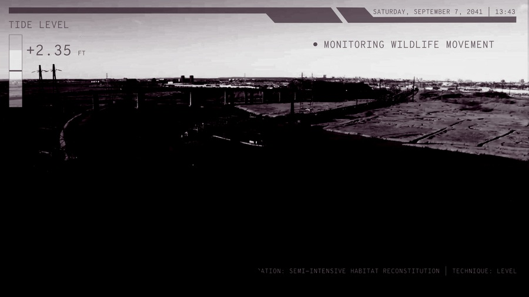
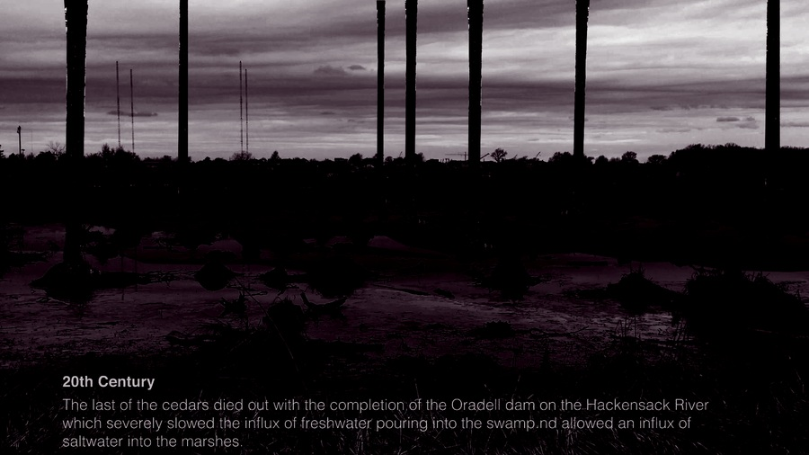
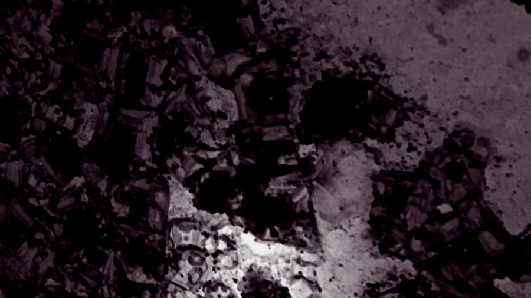

di·o·ram·a — It is called the Diorama, and the idea is borrowed from the panorama.
Oxford English Dictionary · 1823
Temporality · Landscape Processes
Representing landscape phenomena is fundamentally temporal, grounded in the notion that environments are continually in flux. Temporality is a given — leaves rustle in the wind, soil compacts under our feet, water slides across surfaces and permeates into loose substrates. People gather and disperse, the market rises, housing prices fall, and the seasons march along with the death of Winter into the life of the Spring, each signaling the march of time as day to night. Digital Practices IV focuses on the representation of landscape phenomena using the diorama as a conceptual framework. The diorama provides a grounded space to explore landscape phenomena through the construction of the orthographic projection — a three-dimensional representation of a scene or landscape, typically viewed from a controlled vantage point.“Using a static viewpoint, each student will represent an animated view highlighting the ephemeral and temporal qualities of the landscape.”



About the course
Digital Practices IV is a seminar in digital representation taught within the Department of Landscape Architecture. The Spring 2018 iteration engaged the diorama as a conceptual framework, exploring the representation of landscape phenomena through a single animated orthographic view — developed iteratively through lectures, workshops, and reviews.
Faculty: Bradley Cantrell, Chair and Professor of Landscape Architecture. Meeting: Tuesday, 12:30–13:30, Campbell Hall 230. Office Hours: Tuesday, 13:30–15:30.